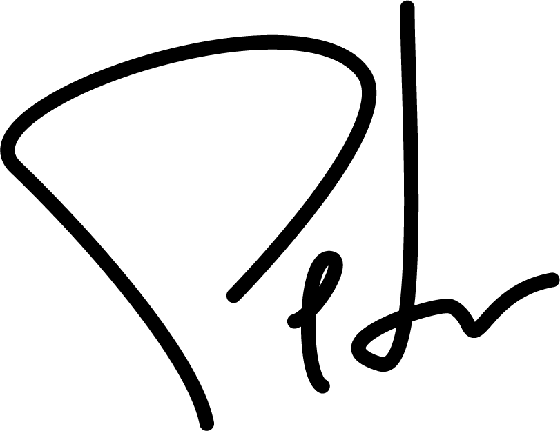

I'm Pete Fraedrich.
I am a technology leader with over 15 years of experience in software development, developer tooling, reliability, and infrastructure.
I bring experience across multiple verticals -- SaaS, fintech, healthcare, and hospitality -- but I'm always open to jumping into something new. I would love an opportunity to dive into games, HPC, and enterprise developer tooling.
Seeking positions in software engineering, DevOps, SRE, and cloud leadership at the Director+ level (ideally VP or C-level).
Click Here to Contact Download CVReduced Cendyn's public cloud expenditure by $1.3M annually through resource rightsizing, decommissioning old resources, leveraging CSP and 3rd party recommendations, re-architecting applications, and enabling realistic data lifecycle policies.
Developed and began executing a 5-year public cloud consolidation and migration strategy, consolidating from seven cloud providers to two -- AWS and Azure -- while making much-needed changes to the fundamental AWS infrastructure, primarily by migrating to Terraform for Infrastructure as Code (IaC). Total financial impact of the project was to be a net 5% reduction in costs and more easily manageable public cloud infrastructure.
With a strong focus on reliability, observability, and automation, the Platform team was able to increase Cendyn's product uptime by 3% annually, representing about 12 days of additional availability over a single year.
Increased team velocity by 27% by spearheding the implementation of Agile-inspired processes in the SRE organization, increasing team morale, and better team execution on strategic goals.
Reduced incident duration by 2% month-over-month through the improvement of application observability, production readiness, and post-incident Root Cause Analysis (RCA).
Reduced software build and deploy times by 30% and removed manual processes from CI/CD systems through the comprehensive redesign and deployment of a net-new CI/CD system with a greater focus on containerization, pipeline reusablility, and end-to-end automation deploy and rollback.
Mentored one of the IT engineers who showed and interest in moving to cloud infrastructure. The engineer was later able to transition into a cloud-focused role and is thriving in their new career path.
Currently seeking full-time employment in technical leadership positions.
Not sure what to do next or how to improve your organization? I can help.
Book me to speak at your next all-hands, team offsite, conference, or special event!
This is only a snapshot of my total experience, skills, and professional life.
If you would like to know more, you can contact me here.
Thanks for reading!
